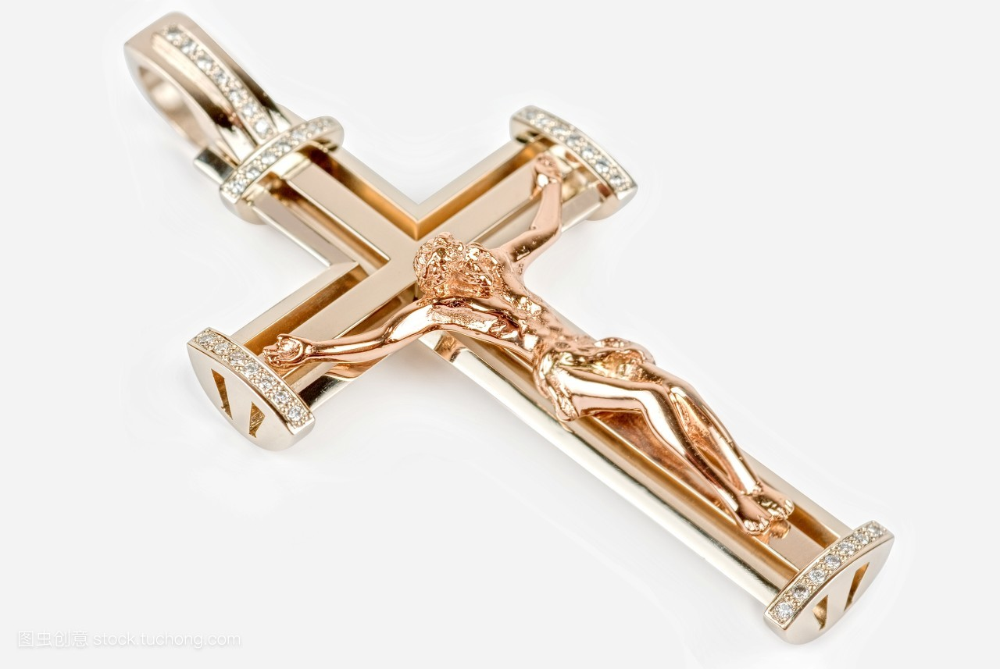

浪淘沙玉器专卖店
掌柜：小花
信誉：
成交量：25
联系电话：18873211213
店铺地址：湖南湘潭
 联系掌柜
联系掌柜
 进店逛逛
进店逛逛
 关注店铺
关注店铺
- 商品名称：玉雕沁色马上翻身坠
- 商品编号：ECS001983
- 上架时间：2018-04-21
- 商品毛重：0克
- 朝代：明朝
- 类别：古玩
- 历史：发源于新石器时代早期而绵延至今的“玉文化”是中国文化有别于世界其他文明的显著特点。中国人把玉看作是天地精气的结晶，使玉具有了不同寻常的宗教象征意义。取之于自然，琢磨于帝王宫苑的玉制品被看作是显示等级身份地位的象征物，成为维系社会统治秩序所谓“礼制”的重要构成部分。同时，玉在丧葬方面的特殊作用也使玉具有了无比的神秘宗教意义。而由于玉的外表及色泽，人们把玉本身具有的一些自然特性比附于人的道德品质，作为所谓“君子”应具有的德行而加以崇尚歌颂，更是中国人的伟大创造。因此，玉是东方精神生动的物化体现，是中国文化传统精髓的物质根基。
中国玉作为中华民族的先民从各种石头中筛选出来的“石之美者”，具有温润莹泽、缜密坚韧的美感和实用功能。在这个漫长的筛选过程中，“昆山之玉”也就是“和田玉”成为公认的“宝玉”、“真玉”。
中国是爱玉之国、崇玉之邦，玉石来源约有一百余处，中国历史上在用玉制度方面早已体现出真玉、非真玉的界定。帝王是中国古代最高阶级，和田玉在成为真玉的同时，也就成为帝王用玉。此后，经过无数的岁月，和阗玉方才走入民间。
和田玉是中华民族的瑰宝，是中国的“国石”。它象一颗明珠，在中国历史文化中放射出灿烂的光辉，是中华民族道德精神的重要象征之一。